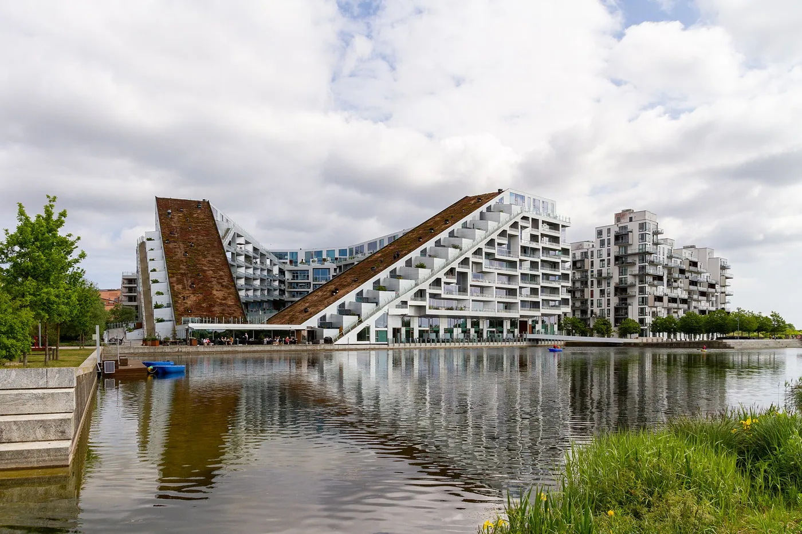
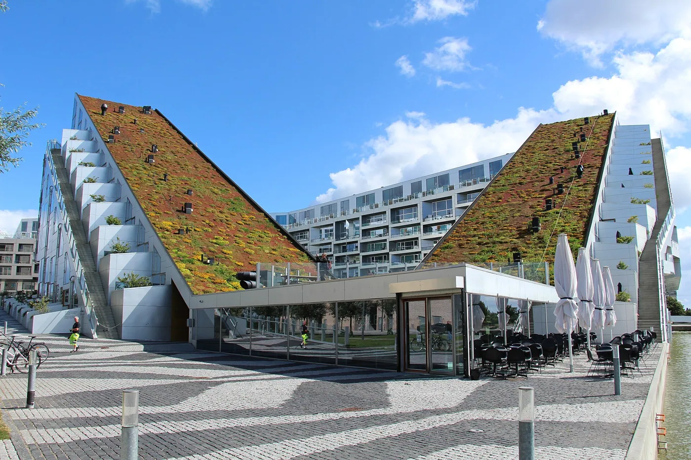
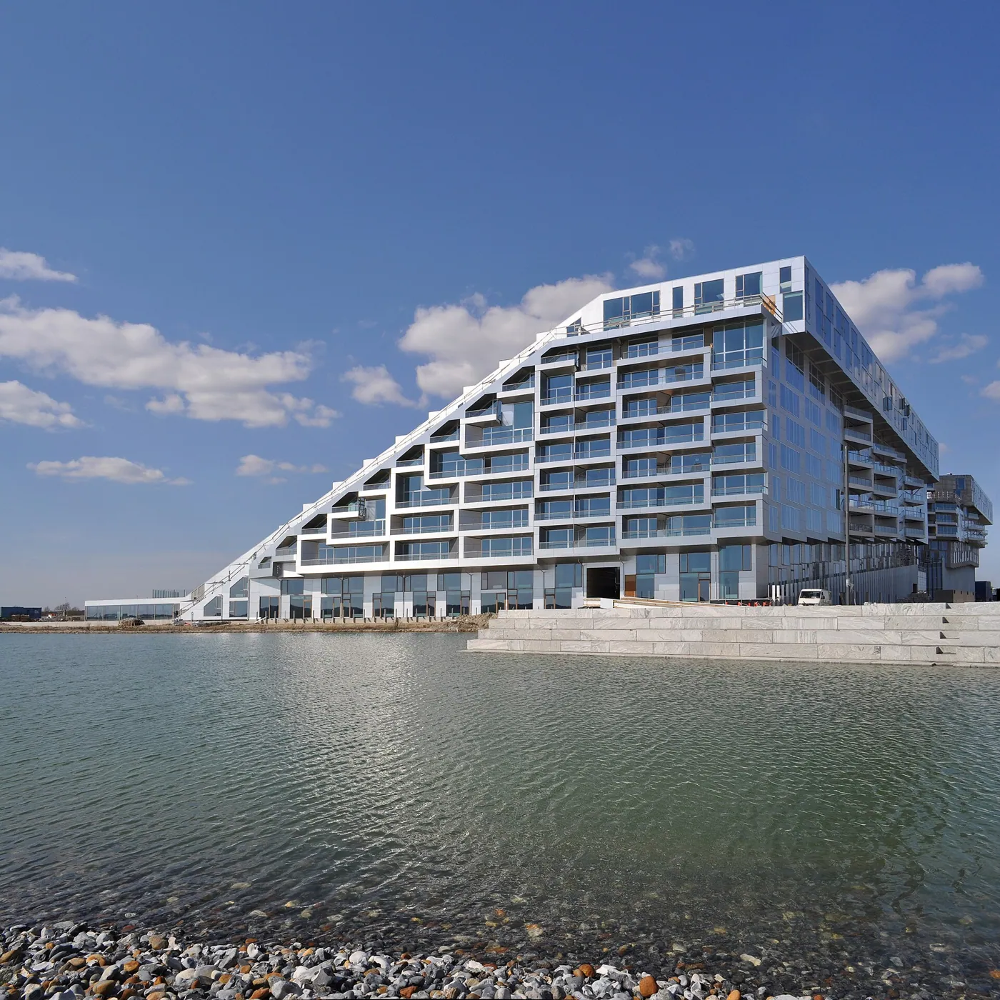
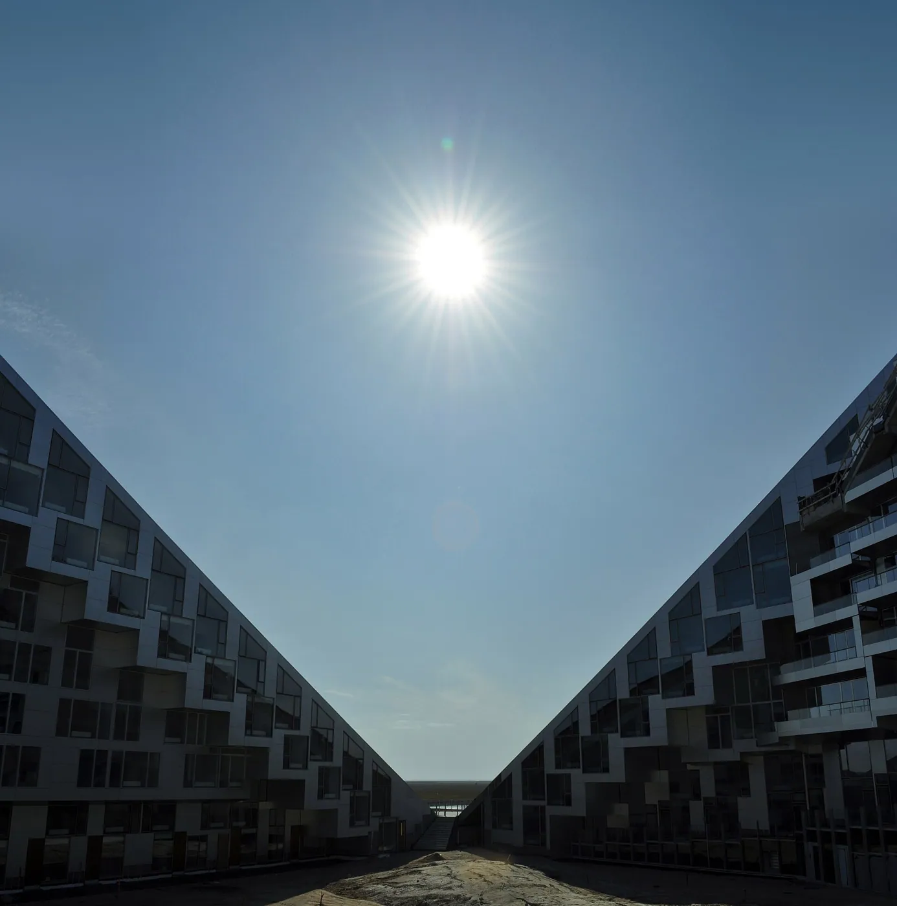
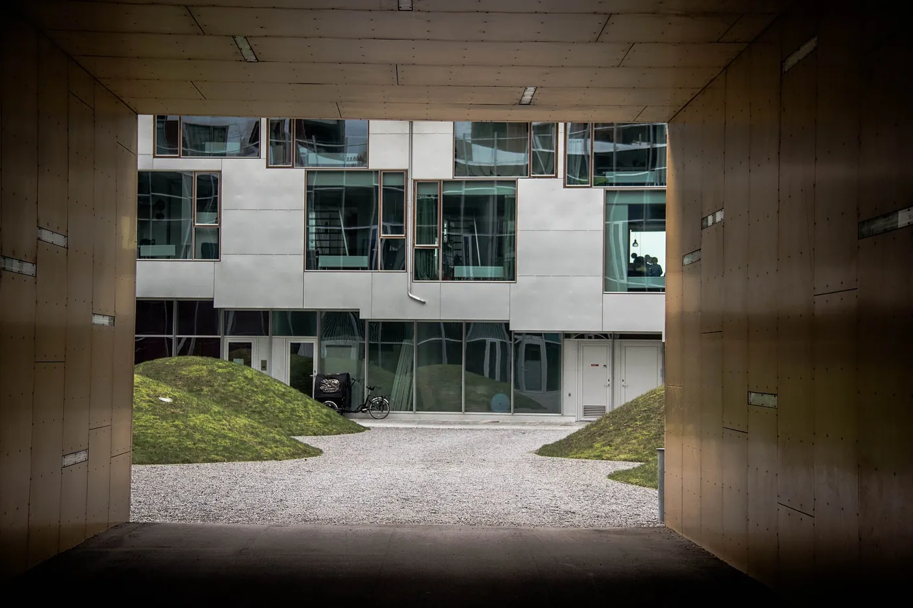
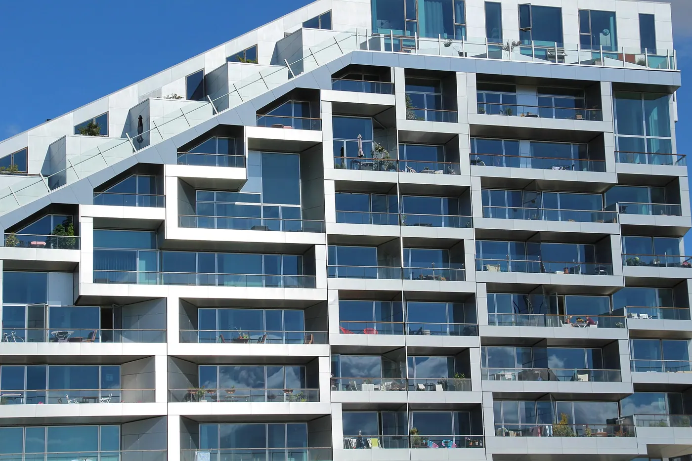

1/8 · Exterior · 8 House - Ørestad district in CopenhagenPhoto: Creative1222 · CC BY-SA 4.0 · source
2/8 · ExteriorPhoto: Fred Romero from Paris, France · CC BY 2.0 · source3/8 · Exterior · 8-talletPhoto: Susanne Nilsson · CC BY-SA 2.0 · source
4/8 · Exterior · bighouse or 8-tallet, housing and offices, ørestad, copenhagen, denmarkPhoto: seier+seier · CC BY 2.0 · source
5/8 · ExteriorPhoto: Mykyta Nikiforov · CC BY-SA 2.0 · source
6/8 · Detail · 8-talletPhoto: Susanne Nilsson · CC BY-SA 2.0 · source7/8 · DetailPhoto: Fred Romero from Paris, France · CC BY 2.0 · source
8/8 · DetailPhoto: Fred Romero from Paris, France · CC BY 2.0 · source082/100 · Housing · Contemporary
8 House
BIG · Copenhagen, Denmark · 2010
Study it forA figure-eight block with a continuous path you can cycle to the top.
- Architect
- BIG
- Place
- Copenhagen, Denmark
- Year
- 2010
- Typology
- Housing
- Movement
- Contemporary
- Region
- Europe
See it on the wall


.jpg){kind=link}
.jpg){kind=link}
.jpg){kind=link}

.jpg){kind=link}
.jpg){kind=link}
.jpg){kind=link}